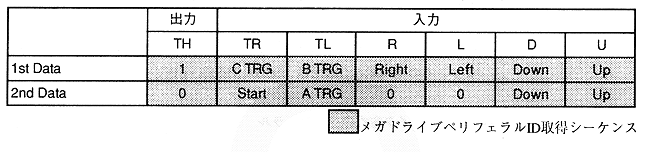

The Megadrive 3-button PAD is a TH-controlled peripheral. The access protocol outputs 1st data and 2nd data alternately by repeating the inversion of the TH bit. Megadrive peripheral ID is DH. Table 3.25 shows the access protocol and data format of the Megadrive 3-button PAD in SH-2 direct mode.
Please read TR, TL, R, L, D, U after 2μS after TH change.
Table 3.25 Mega Drive 3 Button PAD Data Format in SH-2 Direct Mode

∙ Right, Left, Down, Up, Start, A TRG, C TRG, and B TRG are 0 when the button is pressed.